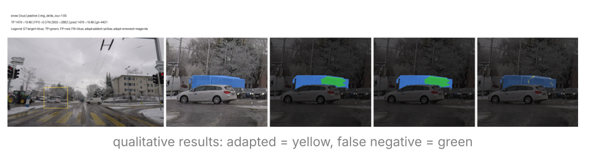
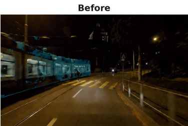
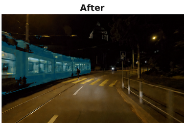

My Role
Defined the research question, implemented the training and evaluation pipeline, designed ablations, analyzed failure cases, and reformulated the next research direction.
Page 3
Qualitative examples compare adapted regions and remaining false negatives. The page also summarizes the research role and the next extension toward TTA with stronger semantic priors.



Defined the research question, implemented the training and evaluation pipeline, designed ablations, analyzed failure cases, and reformulated the next research direction.
Extend the project toward test time adaptation with lightweight adapters and stronger semantic priors. Explore feature channel axis alignment between DINOv3 and the SegFormer decoder.